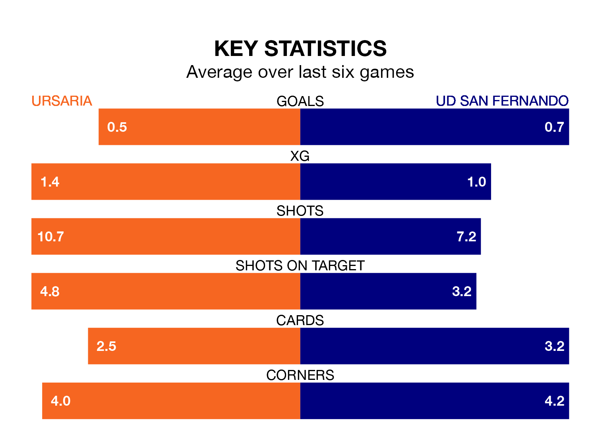

Ursaria are on a terrible run ahead of hosting UD San Fernando at the Estadio Polideportivo La Juventud on Sunday, with just one point collected from their last six games.
Ursaria have picked up just one draw in their last six Segunda División RFEF Group 5 games, and face a San Fernando side whose last six games have brought two wins and two draws.
Ursaria are 14th in the table after 22 games, of which they have won six and drawn seven, earning 25 points.
San Fernando are one place ahead of the hosts in 13th, with seven wins and five draws putting them on 26 points.
With 18 goals in 22 games so far this season, the away team are the league's third-lowest scorers with 0.8 goals per game. And they are conceding at an average rate, letting in 25 goals at a rate of 1.1 per game.
Ursaria are also below average scorers, with 1.0 goal per game, compared to a league average of 1.1. They have conceded 1.2 goals per game.
Ursaria's last match was on February 11, a 1-0 loss against Guadalajara.
San Fernando beat CD Badajoz 2-1 last time out, also on Sunday.
Updated: 13:30 (UTC), 12/02/24